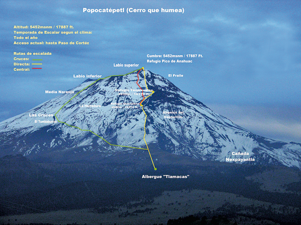

Información sobre el volcán Popocatépletl
Ubicación
El Popocatépetl es un estratovolcán o volcán compuesto. Se le describe como un volcán activo, de hecho, el más activo de México. Descansa al sur de la Ciudad de México sobre los estados de Puebla, Morelos y México, en una provincia fisiográfica nombrada Eje Neovolcánico o Eje Volcánico Transversal, que es una cadena de volcanes que incluye al Iztaccíhuatl, al Paricutín y al Nevado de Toluca, entre otros
Tamaño
De apariencia casi simétrica, cubre una superficie de 283,192.53 hectáreas y tiene una altura de 5,426 metros sobre el nivel del mar. Posee un cráter elíptico de paredes empinadas con una profundidad de 150 metros desde el labio inferior, un diámetro mayor de 900 metros y un ancho total de 400 x 600 metros.

Antigüedad
El Popocatépetl es un volcán geológicamente joven. Se cree que tiene unos 730,000 años de antigüedad y que es remanente de volcanes antiguos que colapsaron. Su historia comenzó con la formación del volcán Nexpayantla a través de la expulsión de flujos de lava andesítica y dacítica. Años después, este volcán colapsó y en consecuencia se formó una caldera, es decir, una depresión amplia y profunda debajo de la cual se halla una cámara de magma.

Historia o leyenda
Hace tiempo, cuando los aztecas dominaban el Valle de México, los otros pueblos debían obedecerlos y rendirles tributo, pese a su descontento pero un día, cansado de la opresión, un cacique de Tlaxcala decidió pelear por la libertad de su pueblo y empezó una terrible guerra entre aztecas y tlaxcaltecas.
La bella princesa Iztaccíhuatl, hija del cacique de Tlaxcala, se había enamorado del joven Popocatépetl, uno de los principales guerreros de este pueblo. Ambos se profesaban un amor inmenso, por lo que antes de ir a la guerra, el joven pidió al padre de la princesa la mano de ella si regresaba victorioso. El cacique de Tlaxcala aceptó el trato, prometiendo recibirlo con el festín del triunfo y el lecho de su amor.
El valiente guerrero se preparó con hombres y armas, partiendo a la guerra después de escuchar la promesa de que la princesa lo esperaría para casarse con él a su regreso. Al poco tiempo, un rival de Popocatépetl inventó que éste había muerto en combate. Al enterarse, la princesa Iztaccíhuatl lloró amargamente la muerte de su amado y luego murió de tristeza.
Popocatépetl venció en todos los combates y regresó triunfante a su pueblo, pero al llegar, recibió la terrible noticia de que la hija del cacique había muerto. De nada le servían la riqueza y poderío ganados si no tenía su amor.
Entonces, para honrarla y a fin de que permaneciera en la memoria de los pueblos, Popocatépetl mandó que 20,000 esclavos construyeran una gran tumba ante el Sol, amontonando diez cerros para formar una gigantesca montaña.
Desconsolado, tomó el cadáver de su princesa y lo cargó hasta depositarlo recostado en su cima, que tomó la forma de una mujer dormida. El joven le dio un beso póstumo, tomó una antorcha humeante y se arrodilló en otra montaña frente a su amada, velando su sueño eterno. La nieve cubrió sus cuerpos y los dos se convirtieron, lenta e irremediablemente, en volcanes.
Desde entonces permanecen juntos y silenciosos Iztaccíhuatl y Popocatépetl, quien a veces se acuerda del amor y de su amada; entonces su corazón, que guarda el fuego de la pasión eterna, tiembla y su antorcha echa un humo.
Durante muchos años y hasta poco antes de la Conquista, las doncellas muertas por amores desdichados eran sepultadas en las faldas del Iztaccíhuatl.
En cuanto al cobarde tlaxcalteca que por celos mintió a Iztaccíhuatl sobre la muerte de Popocatépetl, desencadenando esta tragedia, fue a morir desorientado muy cerca de su tierra, también se convirtió en una montaña, el Pico de Orizaba y se cubrió de nieve. Le pusieron por nombre Citlaltépetl, o “Cerro de la estrella” y desde allá lejos vigila el sueño eterno de los dos amantes a quienes nunca, jamás podrá separar.

Actividad volcánica
Abril 13 11:00 h (Abril 13 16:00 GMT) En las últimas 24 horas, por medio de los registros sísmicos del sistema de monitoreo del volcán Popocatépetl, se han identificado 105 exhalaciones de baja intensidad y dos explosiones, una el día de ayer a las 11:19 h (imagen 1), y la segunda hoy a las 07:26 h (imagen 2) . Se tuvo visibilidad parcial y se observó que los vientos dispersaron las emisiones de manera preferencial al noreste. Durante la noche se observó ligera incandescencia que aumentaba al momento de algunas de las exhalaciones (imagen 3). Desde hoy por la mañana y hasta el momento de este reporte se ha observado una emisión de vapor de agua y gas constante que los vientos dispersan de manera preferencial al este-sureste (imagen 4) . Los demás parámetros de monitoreo permanecen sin cambios importantes. El CENAPRED exhorta a NO ACERCARSE al volcán y sobre todo al cráter, por el peligro que implica la caída de fragmentos balísticos (imagen 5). El Semáforo de Alerta Volcánica del Popocatépetl se encuentra en Amarillo Fase 2. Los escenarios previstos para esta fase son: 1. Que continúe la actividad explosiva de escala baja a intermedia. 2. Lluvias de ceniza leves a moderadas en poblaciones cercanas. 3. Posibilidad de flujos piroclásticos y flujos de lodo de corto alcance.

Para mayor información, pinche aquí
Medidas preventivas
- Limpiar ojos y garganta con agua pura.
- Utilizar lentes de armazón y evitar los lentes de contacto para reducir la irritación ocular.
- Cerrar ventanas o cubrirlas y permanecer lo más posible dentro de la casa.
Monitoreo
Las páginas que están constantemente checando la actividad del volcán y son de fíar, serían: CENAPRED